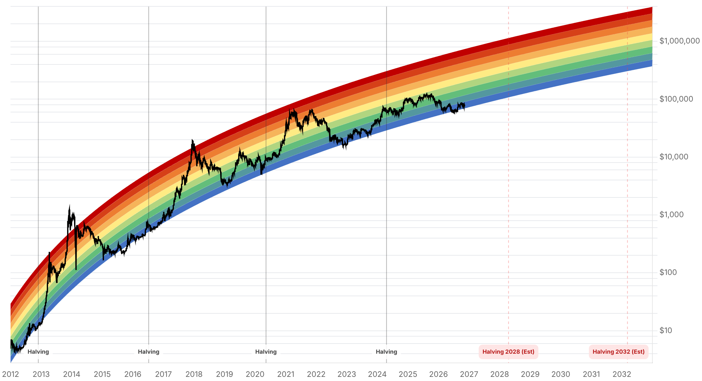

Reporte financiero
BTC cotiza en vivo a USD 74.708,66 (07:27 UTC, -0,72% intradía vs. cierre previo de USD 75.253,86), rebotando de un mínimo aún más bajo que el reportado ayer: en la noche del domingo tocó USD 73.761 (el nivel más bajo desde agosto, según CoinDesk), recuperó brevemente los USD 75.000 y cerró el domingo en USD 75.223,15, antes de volver a ceder terreno hoy. El precio sigue sin reconquistar el costo base de los tenedores de corto plazo (~USD 75.700, Glassnode, señalado ayer como el nivel clave a vigilar) y ahora cotiza en una franja técnica entre el soporte de la media móvil de 200 días (~USD 73.150) y la resistencia de la media de 100 días (~USD 77.430). Lo más relevante que cambió desde el reporte de ayer: (1) estalla un escándalo en Nvidia -el directorio abrió una investigación independiente tras reportes de que el CEO Jensen Huang tuvo una relación con la ejecutiva Alice Huang, a quien agencias de inteligencia de EE.UU. creen vinculada a transferencia de información a Beijing; Huang reconoció la infidelidad pero Nvidia dice no tener indicios de que se haya comprometido información confidencial o de seguridad nacional- esto se suma a una semana ya negativa para el Nasdaq (-5% en la semana previa al viernes 6 de noviembre, cuarta semana consecutiva a la baja) por dudas sobre la narrativa de IA; (2) el Secretario de Estado Marco Rubio calificó de 'outrageous' (escandalosas) las exigencias de Irán y confirmó que las negociaciones no avanzaron, reavivando el patrón ya observado de que BTC cae más seguido durante repuntes del petróleo desde que comenzó la guerra con Irán en marzo; (3) liquidaciones de posiciones apalancadas superaron los USD 1.000M en 24 horas hacia la medianoche del domingo (CoinGlass), con USD 913M concentrados en posiciones largas -el mercado volvió a castigar a los que apostaban al alza-, y Ethereum sufrió proporcionalmente más (USD 448M liquidados) que Bitcoin (USD 272M); (4) el minero MARA vendió 13.597 BTC (40% de su tenencia de fin de septiembre) por ~USD 1.100M en seis semanas, a un precio promedio de ~USD 81.039 -muy por encima del precio spot actual-, usando lo recaudado para pagar USD 750M de deuda respaldada en bitcoin y financiar infraestructura de IA, y anunció que seguirá vendiendo, revirtiendo su política de 2024 de no vender nada de lo minado. El catalizador inmediato pendiente de hoy es el IPC de octubre de EE.UU. (8:30am hora del Este / 13:30 UTC, más tarde de lo que cubre este reporte): se espera +0,3% mensual en el índice general y +0,2% en el núcleo, sin comparación interanual publicada por el vacío de datos del cierre de gobierno de octubre. No pudimos confirmar con fuentes verificadas el cierre exacto de Wall Street del lunes 9 de noviembre (la pregunta pendiente de ayer sobre si la correlación BTC-Nasdaq se reafirmaba), por lo que se deja constancia de que ese dato no está disponible en este reporte en vez de inventarlo. Sin cambios verificados desde ayer en: la revisión de MSCI sobre Strategy (ahora a solo 1 día, el 11 de noviembre), la probabilidad de movimiento de tasas de la Fed en diciembre (76,8-78% citado ayer, sin actualización encontrada hoy), los flujos de ETFs (el tracker público más reciente solo llega al 6 de noviembre, con -USD 411,9M ese día; no hay datos aún de la sesión del lunes 9), la Clarity Act, la vulnerabilidad de BTCPay Server, la apelación del Reino Unido sobre los 61.000 BTC y Cantor Fitzgerald. El Fear & Greed Index subió de 29 a 32 (sigue en 'Fear'), un repunte modesto que acompaña el rebote parcial del precio desde el mínimo del domingo.
Según datos de CoinDesk, el precio cayó a USD 73.761 en la noche del domingo (nivel más bajo desde agosto, por debajo incluso del mínimo intradía de USD 73.869 reportado ayer), recuperó brevemente los USD 75.000 y cerró el domingo 9 de noviembre en USD 75.223,15 -una recuperación parcial no reflejada en el reporte de ayer, que solo alcanzaba a capturar la cotización en vivo de las 07:27 UTC de esa mañana (USD 73.901,99)-. Hoy el rebote se estancó: BTC cotiza en vivo a USD 74.708,66 (07:27 UTC, -0,72% vs. cierre previo), operando entre el soporte técnico de la media móvil de 200 días (~USD 73.150) y la resistencia de la media de 100 días (~USD 77.430). El precio todavía no reconquista el costo base de los tenedores de corto plazo (~USD 75.700, Glassnode) señalado ayer como el nivel clave a vigilar en las próximas 24-48 horas -sigue sin reconquistarse, aunque el mínimo de ayer no escaló hacia USD 70.000.
El directorio de Nvidia abrió una investigación independiente, con asesoría legal externa, tras reportes de que Jensen Huang mantuvo una relación con Alice Huang, ejecutiva de negocios a quien agencias de inteligencia de EE.UU. creen que pasó información a Beijing; Alice Huang está vinculada a Megaspeed, firma acusada de ayudar a empresas chinas restringidas a obtener los chips de IA más avanzados de Nvidia, cuya exportación a China está limitada por Washington. Jensen Huang reconoció ante empleados haber 'sido infiel a su esposa' y se disculpó por el daño causado; Nvidia dijo no tener indicios de que se haya comprometido seguridad nacional o secretos de la empresa, pero la revisión evaluará toda la información disponible. El hecho se conoce en medio de una semana ya débil para el Nasdaq (-5% en la semana previa al viernes 6 de noviembre, cuarta semana consecutiva a la baja) por dudas sobre la durabilidad de la narrativa de IA -la acción tokenizada de Nvidia (NVDAX en xStock) cayó 3,55% en 24 horas hasta USD 180,42 el domingo, con un descuento frente al cierre de Nvidia en Nasdaq el viernes (USD 186,64) que sugiere que los traders de cripto esperaban una caída adicional al abrir Wall Street el lunes. No pudimos confirmar con una fuente verificada el cierre real del Nasdaq del lunes 9 de noviembre, por lo que ese dato queda pendiente en vez de inventarlo.
El Secretario de Estado Marco Rubio dijo que las exigencias de Irán fueron 'outrageous' (escandalosas) y que las negociaciones no lograron avanzar. Según CoinDesk, el aumento de tensiones en Medio Oriente suele presionar al alza el precio del petróleo e impulsar aversión al riesgo, y Bitcoin ha caído con más frecuencia durante repuntes petroleros desde que comenzó la guerra con Irán en marzo de 2026. Es un desarrollo nuevo desde el reporte de ayer, que no mencionaba el estado de estas negociaciones.
CoinGlass registró más de USD 1.000M en liquidaciones de posiciones apalancadas en 24 horas hacia la medianoche del domingo, con USD 913M concentrados en posiciones largas -el mercado volvió a castigar a quienes apostaban a una recuperación-. Ethereum sufrió el golpe proporcionalmente mayor: USD 448M liquidados frente a USD 272M en Bitcoin, con la liquidación individual más grande (USD 48M) también en ETH. Esto continúa la dinámica ya señalada ayer (liquidaciones elevadas de fin de semana con 90%+ en largos), pero con una cifra agregada más alta y el detalle nuevo de que ETH se vio más afectado relativamente que BTC.
MARA Holdings vendió 13.597 BTC desde fines de septiembre -40% de las 34.012 BTC que tenía a esa fecha- por aproximadamente USD 1.100M, a un precio promedio de ~USD 81.039 por moneda, muy por encima del precio spot actual. Usó USD 750M para pagar deuda respaldada en bitcoin (liberando 17.477 BTC pignorados, bajando la porción de sus tenencias prestadas/pignoradas de 57% a menos de 5%) y destina el resto a financiar infraestructura de IA -incluyendo el cierre próximo de la planta de gas natural Long Ridge y el desarrollo de un sitio en Texas con capacidad de hasta 2 GW-, además de un programa de recompra de acciones autorizado por hasta USD 500M. La empresa confirmó que seguirá vendiendo bitcoin, revirtiendo su política de 2024 de no vender nada de lo minado -las ventas totales de 2026 ya superan las 40.000 BTC-.
La revisión de MSCI sobre la elegibilidad de Strategy sigue fijada para el 11 de noviembre -ahora a solo 1 día-, sin información adicional a la ya reportada. La probabilidad de movimiento de tasas de la Fed en diciembre se mantiene en 76,8-78% (CME FedWatch/Reuters, cifra de ayer), sin una actualización verificada hoy. El tracker público de flujos de ETFs (tftc.io) solo tiene datos confirmados hasta el 6 de noviembre (-USD 411,9M ese día, impulsado por salidas de IBIT), sin cifras todavía de la sesión del lunes 9 de noviembre -el acumulado de noviembre permanece en ~-USD 1.280M en 5 sesiones hasta el 6 de noviembre-. Tampoco hay desarrollos nuevos verificados en la Clarity Act, la vulnerabilidad de BTCPay Server, la apelación del Reino Unido sobre los 61.000 BTC, ni Cantor Fitzgerald.
| Periodo | Valor |
|---|---|
| 4 nov | 80405.29 |
| 5 nov | 75942.13 |
| 6 nov | 75746.93 |
| 7 nov | 75747.58 |
| 8 nov | 74584.65 |
| 9 nov | 75223.15 |
| 10 nov (en vivo) | 74708.66 |
| Periodo | Valor |
|---|---|
| Hoy | 32 |

“Until ETF flows turn positive and the Fed turns dovish, the path of least resistance remains lower.”
“A durable Bitcoin recovery will depend on improving liquidity and spot demand, not macro relief alone.”
El catalizador inmediato es el IPC de octubre de EE.UU. (8:30am ET / 13:30 UTC, posterior al horario de este reporte): se espera +0,3% mensual en el índice general y +0,2% en el núcleo. Según BRN, una lectura más fría ayudaría a los activos de riesgo, pero Bitcoin necesita 'compra real, no un golpe de suerte'; según Bitget Wallet, una lectura más caliente reforzaría las expectativas de un movimiento de tasas hawkish en diciembre, mientras que una más fría podría gatillar un rally de alivio. El nivel técnico a vigilar sigue siendo el costo base de corto plazo (~USD 75.700, aún no reconquistado) y, a la baja, USD 73.000 (BRN advierte que un cierre diario UTC por debajo podría abrir la puerta a USD 70.000, y Bitget Wallet señala USD 68.000 como el siguiente nivel si se pierden los USD 73.000 de forma decisiva).
La revisión de MSCI sobre Strategy (11 de noviembre, a 1 día) y la probabilidad de movimiento de tasas de la Fed en diciembre (76,8-78%, sin actualización hoy) siguen siendo los riesgos macro/estructurales más próximos. Se suma el escándalo de Nvidia -con su investigación independiente en curso por el vínculo de la pareja del CEO con inteligencia china- como un nuevo factor de incertidumbre para la narrativa de IA que ha pesado sobre el Nasdaq (-5% en la última semana reportada) y, por correlación, sobre el apetito de riesgo cripto. El fracaso de las negociaciones con Irán reaviva el patrón de presión sobre BTC ante repuntes del petróleo. La venta continua de BTC por parte de MARA (ya supera 40.000 BTC en 2026) añade presión de oferta marginal desde el lado de los mineros.
Sin cambios en los objetivos de precio de largo plazo ya reportados en ediciones anteriores (Citigroup, Bernstein, Standard Chartered, Tom Lee, NYDIG, Armstrong, piso de costo de producción de JPMorgan en USD 94.000 -muy por encima del precio spot actual-). BTC sigue muy por debajo de su máximo de 52 semanas de USD 107.428. La combinación de venta de mineros, riesgo de contraparte en exchanges (MEXC/FinCEN, Binance) y ahora riesgo reputacional en Nvidia -ligado a la narrativa de IA que ha correlacionado con cripto en 2026- añade capas de incertidumbre que no estaban presentes hace una semana.
Es el dato duro más próximo: una sorpresa a la baja podría gatillar el rally de alivio que BRN y Bitget Wallet condicionan a una mejora de flujos de ETF y un giro dovish de la Fed; una sorpresa al alza reforzaría las expectativas de un movimiento de tasas hawkish en diciembre y probablemente presione el precio hacia el soporte de USD 73.000.
Ambos son factores de sentimiento de riesgo general (vía correlación con Nasdaq/IA y vía petróleo/geopolítica, respectivamente), no eventos que afecten la oferta o demanda de BTC en sí. Tratarlos como la causa principal del movimiento de precio sería una lectura apresurada; son telón de fondo, no el detonante.
Con el mecanismo de exclusión gradual ya conocido y hasta USD 2.800M en salidas pasivas estimadas por JPMorgan si se confirma la exclusión, es el evento binario más próximo con potencial de afectar tanto a MSTR como, indirectamente, al sentimiento cripto.